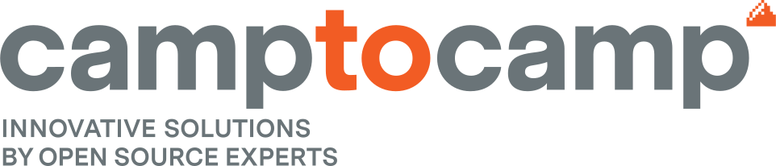

Remerciements
Avant tout développement sur cette expérience professionnelle je tiens à remercier tout particulièrement mon maître de stage, Mr Léo Depriester, pour son accueil chaleureux.
J’ai rapidement été mis en confiance ce qui m’a permis de profiter pleinement de cette expérience. De plus, il a fait le déplacement,
depuis Paris, pour être présent durant mon stage, et je lui en suis reconnaissant.
Je souhaite également remercier toutes les personnes qui m’ont consacré du temps durant cette semaine afin de me présenter et de m’expliquer leur métier,
ou même de m’en apprendre les bases. Et Mr Hugo Bollon, alternant à Camptocamp, qui m’a donné les coordonnées de Mr Léo Depriester.
Grâce à vous tous et à votre bienveillance, je garderai un très bon souvenir de mon stage de troisième.
Je remercie également mon professeur, Mr Picque, pour son soutien et ses conseils.
Introduction
En cette année de troisième, je devais effectuer un stage d'observation afin de me permettre de voir de plus près le milieu professionnel.
J’ai donc cherché un stage dans le domaine qui m’intéressait, c'est-à-dire le monde de l’informatique.
Ce stage pourrait me permettre de me faire découvrir de nouvelles voies vers lesquelles je pourrais m'orienter pour ma poursuite d’études.
Comme dit plus haut, je suis intéressé par le monde de l'informatique, par le biais de mon frère j'ai entendu parler de l'entreprise Camptocamp.
J'ai donc contacté Léo Depriester qui est le Team Leader de l’équipe SRE2 (Site Reliability Engineering).
Il a accepté ma candidature et m'a permis de faire mon stage dans cette entreprise.
Le premier jour de mon stage j’étais très stressé, c’était la première fois que j’allais évoluer en milieu professionnel.
Léo, mon maître de stage, m'a directement mis en confiance et je l’en remercie. Ceci m’a permis d’être bien plus à l’aise pour la suite.
J’attendais de ce stage dans un premier temps de me faire découvrir le monde du travail et de potentiellement apprendre à développer et à en connaître plus sur le monde du numérique.
Grâce à ce stage, j'ai eu l'occasion de visiter trois départements : Infrastructure Solutions & Services, Geospatial Solutions et Business Management Software.
Ce stage a été une réelle opportunité pour moi, étant donné que je suis intéressé par l'informatique.
La rédaction du rapport de stage a débuté lors de mon stage afin de servir de support pour la réalisation de mon premier site web.
Il est hébergé sur GitHub Pages et est disponible a cette adresse :
https://lbollon.github.io/stage-c2c/
I - Présentation de la structure
Présentation et historique de l’entreprise.
Camptocamp est situé le 18 rue du Lac Saint André - Bât. Le Dauphin, Savoie Technolac, 73 370 Le Bourget-du-Lac.
C’est une société de services qui a vu le jour en 2001 fondée par M. Claude Philipona et M. Luc Maurer. À l’heure actuelle,
cette entreprise rassemble plus de 130 collaborateurs et est présente dans trois pays à travers le monde: en France à Paris et Chambéry,
en Suisse à Lausanne et Olten et enfin en Allemagne à Munich.
Camptocamp est spécialisé dans le déploiement et la maintenance de solutions open-sources pour les professionnels. En y regardant de plus près, Camptocamp divise ses services en quatre départements:
- Infrastructure Solutions & Services
- Geospatial Solutions
- Business Management Software
- Gestion des souscriptions
Les origines de Camptocamp
M. Claude Philipona et M. Luc Maurer étaient à la base des passionnés de montagne,
ces fondateurs ont beaucoup voyagé et ont eu l'idée de partager leurs expériences avec une plus grande communauté.
Camptocamp a donc été fondé dans le but de faciliter l'échange d'informations entre passionnés de montagne et d'augmenter la sécurité dans la pratique des activités de montagne.
Une première version de Cartoweb, une solution Open Source pour la visualisation cartographique de sentiers de randonnée sur Internet, a été développée.
Le forum www.camptocamp.org a donc été fondé dans le but de faciliter l'échange d'informations entre passionnés de montagne et d'augmenter la sécurité dans la pratique des activités de montagne.
Lors du développement de cette plateforme, qui est encore très populaire aujourd'hui, les fondateurs ont pu acquérir un grand savoir-faire technique.
Afin d'exploiter tout le potentiel de cette idée et de la développer commercialement, la société Camptocamp SA a été fondée sous le même nom sur le campus de l'EPFL à Lausanne.

L’activité de l’entreprise
Camptocamp est une société de services qui propose des solutions Open Source. Ce terme sera défini dans une autre partie.
Les trois coeurs de métier chez Camptocamp sont :
- Infrastructure Solutions & Services
- Geospatial Solutions
- Business Management Software
Le département Gestion des souscriptions est de très petite taille, je ne rentrerai pas en détail sur ce dernier.
A savoir que l’aire d’activité de l’entreprise est européenne, comme dit plus haut pour Camptocamp le secteur d’activité de l’entreprise est le service.
La concurrence n’épargne pas Camptocamp, chaque département à ses propres concurrents, je vais donner les chiffres de deux de ses départements,
pour le département Business Management Software 66 concurrents français, 22 concurrents suisses. Et pour celui Infrastructure Solutions & Services 50 concurrents en France.
Travailler dans l’entreprise
Travailler dans l’entreprise
Dans le département Infrastructure Solutions & Services, il y a d’abord le Department Manager, ensuite les Team Leaders et les Managers,
enfin il y a les Site Reliability Engineers, les Architects et enfin les Consultants.
Nature du travail, horaires, organisation
Leur travail consiste à comprendre et à répondre aux besoins de leurs clients en développant une solution informatique.
Leur rôle et leur responsabilité consistent à ce que la demande du client soit satisfaite et que tout fonctionne bien.
En tant que stagiaire de troisième j’ai dû demander en amont du stage quels seront mes horaires à Léo. Je devais avoir des horaires fixes.
Mes horaires étaient de 9H-17H du lundi 17 janvier au vendredi 21 janvier. Mais pour les employés là-bas il n’y a pas d’horaires fixes pour une meilleure qualité de vie,
mais cependant il y a un nombre d'heures à faire par semaine. Il faut faire au moins 38h30. Les seules plages obligatoires sont 10h/12h et 14h/16h.
Au bout de la semaine si ce nombre d'heures n’est pas respecté, il pourra être rattrapé une autre semaine.
Camptocamp étant une entreprise d’informatique répondant aux besoins du client, pas besoin de se déplacer car tout se gère à distance.
Les employés peuvent traiter toutes les demandes du client depuis leur bureau à Camptocamp et, étant donné la situation actuelle, ils peuvent faire de même depuis chez eux.
Ce travail ne demande aucune exigence physique particulière.
Les qualités et compétences à posséder pour travailler dans cette entreprise sont, pour le département Infrastructure,
d’avoir un bon niveau en développement et de bonnes connaissances en informatique.
Un Master II en informatique est un plus pour travailler dans l’entreprise mais cela peut varier en fonction des personnes,
de l'expérience et de la motivation qui sont des facteurs tout aussi importants. Ce travail exige un esprit d’équipe et de la rigueur.
Pour ce qui est de l'évolution de carrière :
En étant développeur on peut évoluer en architecte.
Et en étant consultant on peut évoluer en chef de projet.
Les Salaires :
Sur Chambéry les salaires peuvent aller de 35 à 55 mille euros brut par an.
Les employés bénéficient d’une carte restaurant.
Les partenaires de l’entreprise
Les clients
Au niveau du département Infrastructure, la clientèle peut être composée de n'importe quel acteur. Des collectivités locales, des startups,
des structures commerciales, des entreprises d’informatique ou non, etc.
Si ils ont besoin d'architecture ( serveur, base de données, déploiement d’applications dans le cloud, etc.) ce département peut y répondre.
Idem chez Business mais c’est plus souvent des sociétés plus importantes en taille qui ont besoin d’un ERP pour gérer leur entreprise.
Tandis que chez Geospatial les clients sont plus atypiques, ce sont souvent des collectivités locales,
des organismes de sapeurs-pompiers ou des entreprises qui ont besoin de solutions de cartographie comme des sociétés de télécommunication.
Comme fichier client Camptocamp (plus particulièrement le département Business) utilise Odoo, c’est un ERP. Un ERP c’est une application qui permet de gérer une entreprise,
c'est une suite d’applications business de nouvelle génération.
Pour trouver leurs clients il y a deux manières :
- Ils font de la communication dans des congrès/expositions, sur les réseaux sociaux comme LinkedIn et ils sont présents et actifs sur la scène de l'Open Source.
- Ils répondent à des appels d'offres (des clients qui cherchent des entreprises pour réaliser des projets) où ils sont en concurrence avec d'autres sociétés pour réussir à décrocher le contrat.
On y retrouve souvent nos concurrents qui sont en compétition aussi, comme CapGemini (l’un des plus gros concurrent chez l’infrastructure)
Les concurrents
Pour ce qui est des concurrents, comme dit plus haut chaque département a ses propres concurrents.
Petit rappel : Infrastructure → 50 concurrents en france. Le plus gros concurrent de ce département est CapGemini, situé à Paris, et qui a pour fondateur Serge Kampf.
C’est une entreprise de services du numérique français présente au CAC40.
Les fournisseurs
Camptocamp ne dispose pas de fournisseurs car ils proposent des services informatiques, ils ne gèrent pas de matières premières.
Types de services
Au cours de ce stage j’ai appris qu’il y a 5 types de services :
- Consulting : c’est l’analyse des besoins du client, la conception d'architecture technique.
-
- FinOps : l’analyse des coûts du cloud, rationalisation des dépenses et donner des conseils sur le choix des services et produits.
-
- l’Implémentation : prix des serveurs variée en fonction des ressources besoins.
-
- Le développement logiciel : outils automatisé, contribution de l’Open Source.
-
- Déploiement informatique : Infrastructure As Code*, pipelines CI/CD** (série d'étapes à réaliser en vue de distribuer une nouvelle version d'un logiciel)
-